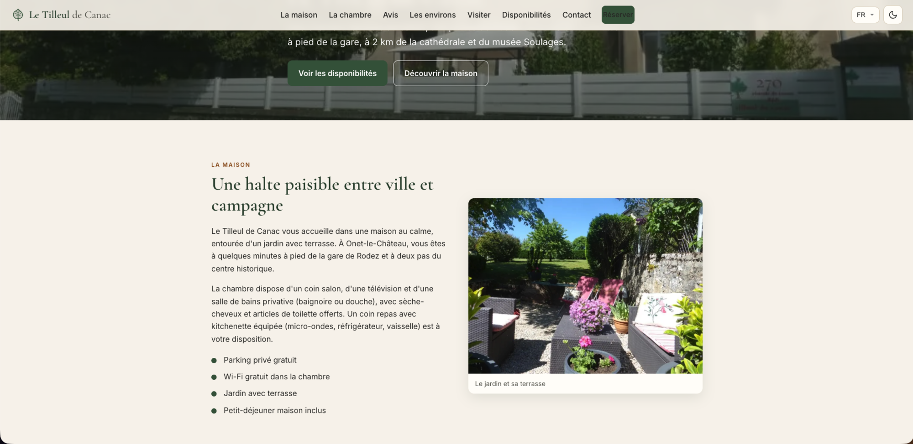

Chambre d'hôtes · Aveyron
Le Tilleul de Canac
Une chambre au calme, aux portes de Rodez. Le site est en cours de préparation.

Le projet
Site vitrine d'une chambre d'hôtes en Aveyron, pensé pour présenter le lieu simplement et permettre aux visiteurs de vérifier les disponibilités.
Le site est en cours de construction ; cette page présente son état actuel.
- Rôle
- Projet client — conception et développement
- Stack
- React · Vite · Leaflet
- Statut
- En construction
Contenu prévu
- 01
Présentation
Le lieu et la chambre.
- 02
Galerie
Photos du lieu.
- 03
Disponibilités
Les périodes libres, avec une carte du secteur.